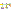
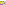

Jasper Van der Jeugt
HaskellerZ
October 2, 2025
Correct-by-construction definition of π
Example: 2 + 3
((Prim(3, 1) 2) 3)
Example: 2 + 3
((Prim(3, 1) 2) 3)
| Module | Opcode | Primitive |
|---|---|---|
| 1 | 1 | ((in_num k) l) |
| 1 | 2 | ((in_char k) l) |
| 2 | 1 | ((out_number x) k) |
| 2 | 2 | ((out_char x) k) |
| 3 | 1 | ((num_add x) y) |
| 3 | 2 | ((num_sub x) y) |
| 3 | 3 | ((num_mul x) y) |
| 3 | 4 | ((num_div x) y) |
| 3 | 5 | ((num_mod x) y) |
| 4 | 1 | ((((cmp_eq x) y) t) f) |
| 4 | 2 | ((((cmp_lt x) y) t) f) |
| 4 | 3 | ((((cmp_gt x) y) t) f) |
| 4 | 4 | ((((cmp_lte x) y) t) f) |
| 4 | 5 | ((((cmp_gte x) y) t) f) |
| 5 | 1 | (inexact_sqrt x) |
How do you implement recursion with only lambdas?
Y = λf. (λx. f (x x)) (λx. f (x x))
Y program = program (Y program)
LET y = λf. (λx. f (x x)) (λx. f (x x)) IN
LET newline = 10 IN
LET zero = num_sub 1 1 IN
LET id = λx.x IN
y (λrec acc.
in_char
(λc.
(cmp_eq c newline)
(acc (out_char newline (rec id)))
(rec (λfinal. (out_char c (acc final)))))
zero)
id
Look mum, no Y!
data ColorConstraint c p
= Eq p p
| NotEq p p
| LitEq c p
scoreLayout :: Ord v => Expr v -> Int
scoreLayout expr =
let shape = exprToShape expr in
2 * (sWidth shape + sHeight shape) +
abs (sWidth shape - sHeight shape) +
4 * abs (sHeight shape `div` 2 -
sEntrance shape)
LET y = IMPORT @contaminate="true" "y.png" IN
LET char_a = num_add (num_mul 10 9) 7 IN
LET char_z = num_add char_a 25 IN
LET and = λp q. p q p IN
LET alpha = λn. and
(cmp_gt n (num_sub char_a 1))
(cmp_lt n (num_add 1 char_z)) IN
LET rot13 = λn. (alpha n)
(num_add char_a (num_mod
(num_add 13 (num_sub n char_a)) 26))
n IN
y (λrec. in_char (λn.
out_char (rot13 n) rec) (num_sub 1 1))